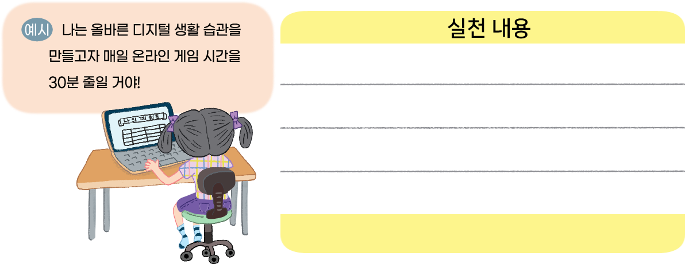

- 활동 1
- 활동 2
- 활동 3
-
표의 점수칸을 클릭하세요.(항상 그렇다: 5점, 자주 그렇다: 4점, 그렇다: 3점, 그렇지 않다: 2점, 전혀 그렇지 않다: 1점)
질문 5점 4점 3점 2점 1점 1 디지털 기기를 사용하느라
공부, 숙제 등을 미룬 적이 있나요?2 디지털 기기 사용 시간을
스스로 조절하기 어려웠던 적이 있나요?3 디지털 기기를 사용하지 못할 때,
견디기 힘들었거나 불편했던 적이 있나요?각 질문에서 3점 이상이 나온다면 디지털 생활 습관이 좋지 않은 거예요.
-
현재 내가 지닌 습관이나 태도
게임을 하다 숙제를 못 한 경우가 많습니다.
앞으로 내가 지녀야 할 습관이나 태도게임 시간을 정하고 조정합니다.
-

디지털 기기에 지나치게 의존하지 않습니다.
디지털 기기를 사용할 때 비속어를 쓰지 않겠습니다.
디지털 기기 사용 시간을 정해 놓고 사용하겠습니다.
디지털 기기를 사용하느라 할 일을 미루지 않겠습니다.